Manycore Aholo Global 3D AI Hackathon · project report · 19 November 2026 · team of one (neromtoobad)
A playable 3D medieval realm in the browser. Every castle, wall, tower, house and hall in it is placed from six 3D models, and all six were generated from text with the Lux3D API.
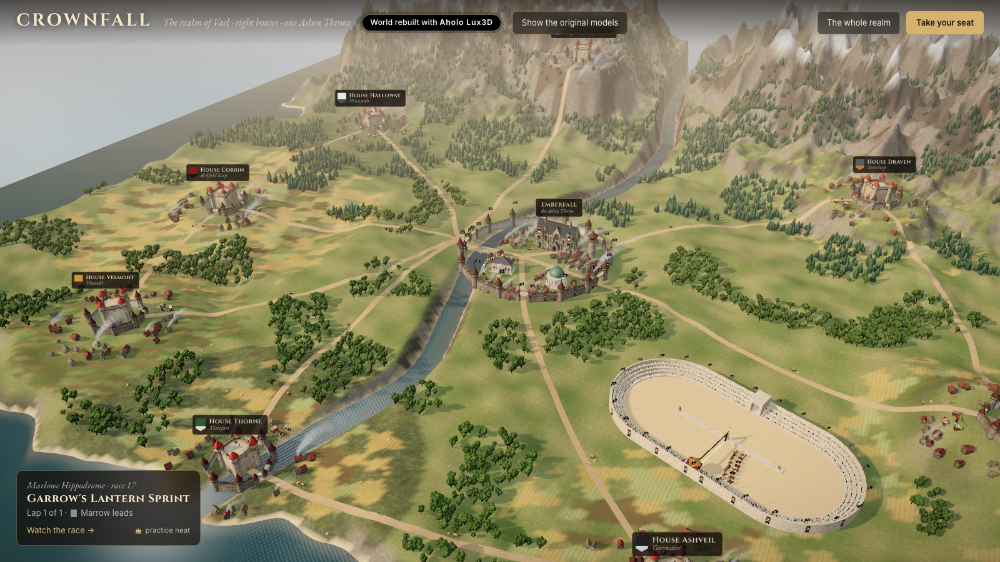
Most text-to-3D showcases are single objects on a turntable. We wanted to know whether Lux3D is good enough to be the only source of architecture in a real, playable game world.
Crownfall made that a clean test. The realm's layout is code: it decides where every wall segment, tower and house goes, and stretches one model into each slot. So the built world is defined by just six models. That means the look of the whole realm is six sentences of text. Change the sentences, run Lux3D, and hundreds of buildings change, without touching the layout or the game.
Why it is worth trying: this is the workflow a small team would actually use. Write the art direction once as prompts, generate a kit, drop it into a working game. The header switch shows the result honestly, because the old models are still one click away.
tools/lux3d/kit.json. They share one art direction: pale limestone, terracotta roofs, timber frames, thatch.tools/lux3d/kit.mjs calls POST /lux3d/v1/generate/text-to-3d/task/create (model G1-Turbo, GLB output), polls GET /lux3d/v1/generate/task/get, and downloads the result. Lux3D runs one generation at a time per account, so the script is a serial queue that waits for the slot.web/src/realm/Props.tsx draws each model as one instanced mesh, stretched into every slot the layout asks for. web/src/realm/kit.ts chooses between the Lux3D set and the original set.| Model and where it is used | Lux3D task | Time | Triangles (generated → in the realm) | File size |
|---|---|---|---|---|
| keep the castle keep at the heart of each of the eight houses |
#8427584 | 119s | 43,956 → 20,202 | 11.5 MB → 785 KB |
| tower every wall tower and gatehouse tower |
#8427923 | 108s | 8,378 → 3,000 | 9.0 MB → 138 KB |
| wall every stretch of castle and city wall |
#8428298 | 127s | 6,510 → 2,500 | 6.4 MB → 103 KB |
| cottage the village cottages |
#8428642 | 130s | 11,120 → 6,186 | 8.7 MB → 223 KB |
| townhouse the town and capital houses |
#8429112 | 140s | 9,510 → 3,000 | 7.4 MB → 116 KB |
| throne hall the great hall of the Ashen Throne in the capital |
#8429371 | 157s | 29,728 → 20,000 | 8.7 MB → 543 KB |
These numbers are written by the script while it runs (web/public/lux3d/kit.json), not typed by hand.
Left: the model Crownfall used before. Right: the Lux3D model that replaced it, after fitting. Below each pair: the exact prompt.
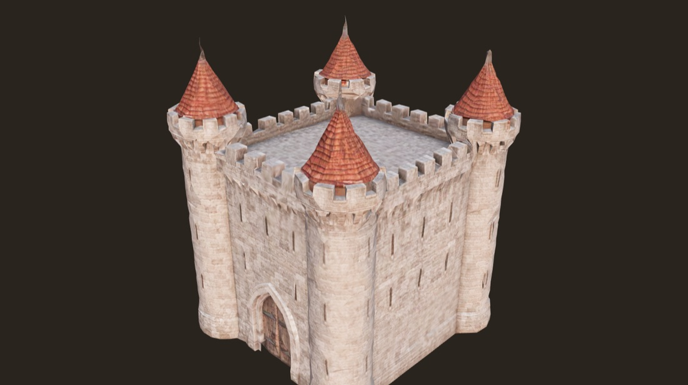
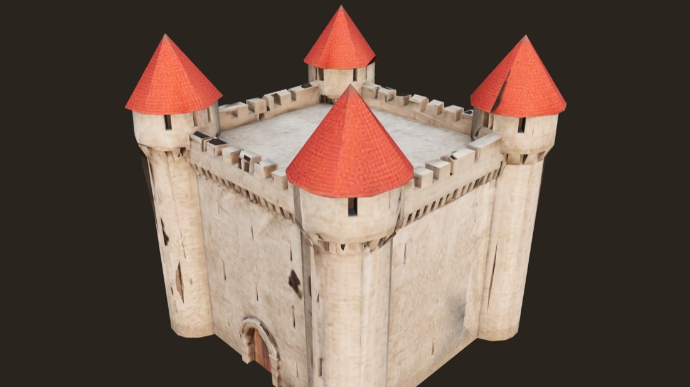
A square medieval castle keep with four round corner towers topped with conical terracotta-red tiled roofs, crenellated battlements, an arched wooden gate and arrow slits, pale weathered limestone, single isolated building, game asset
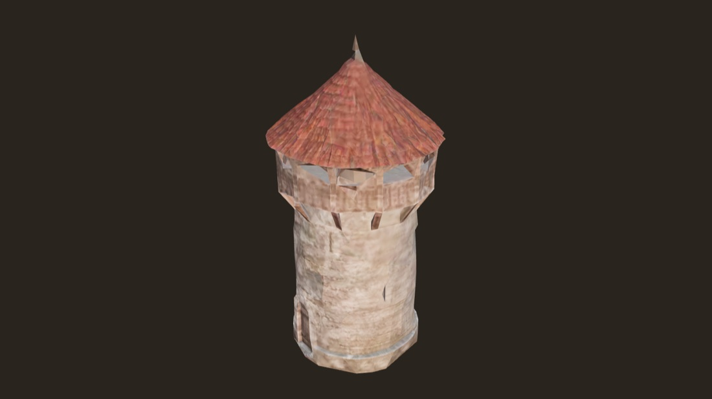
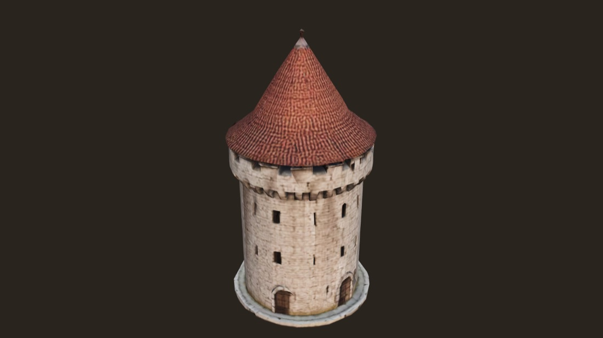
A round medieval castle tower of pale weathered limestone with crenellated battlements, arrow slits and a conical terracotta-red tiled roof, single isolated tower, game asset
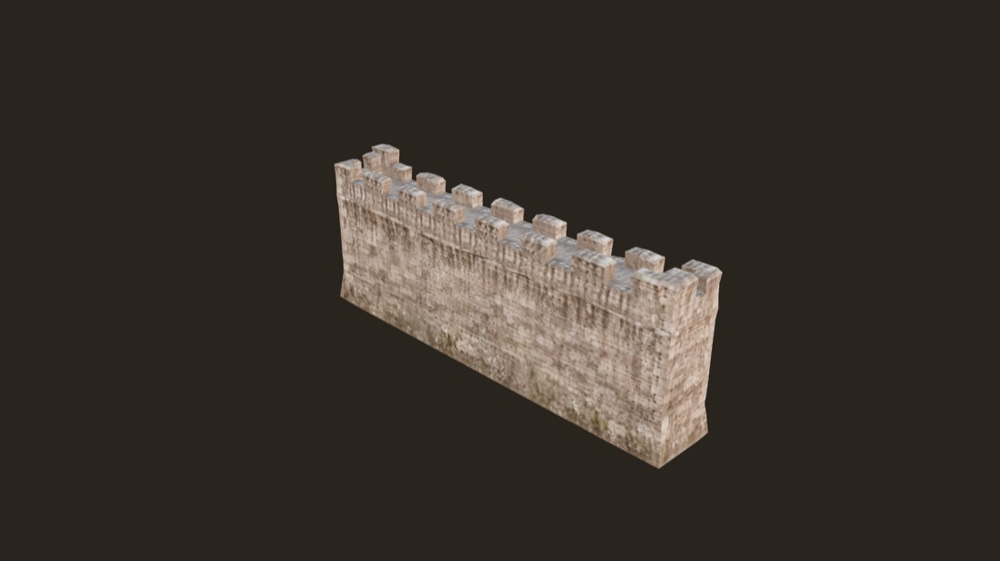
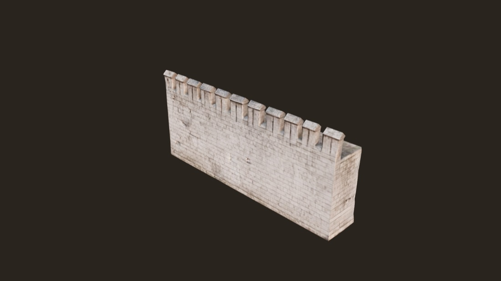
A straight section of medieval castle curtain wall, a long rectangular block of pale weathered limestone with crenellated battlements along the top and flat cut ends, single isolated wall segment, game asset
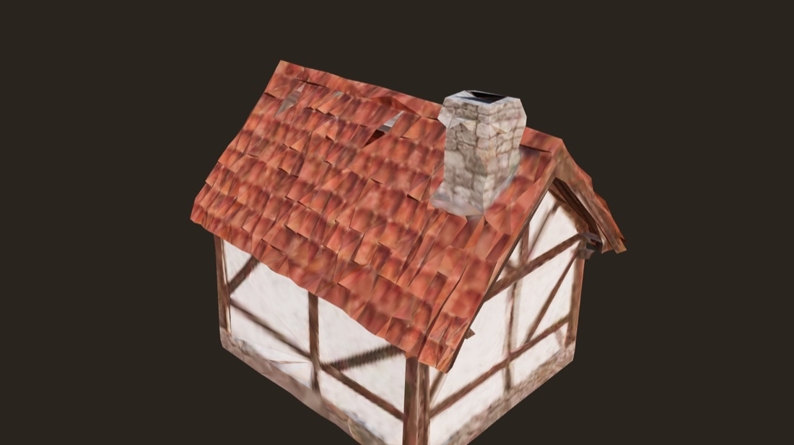
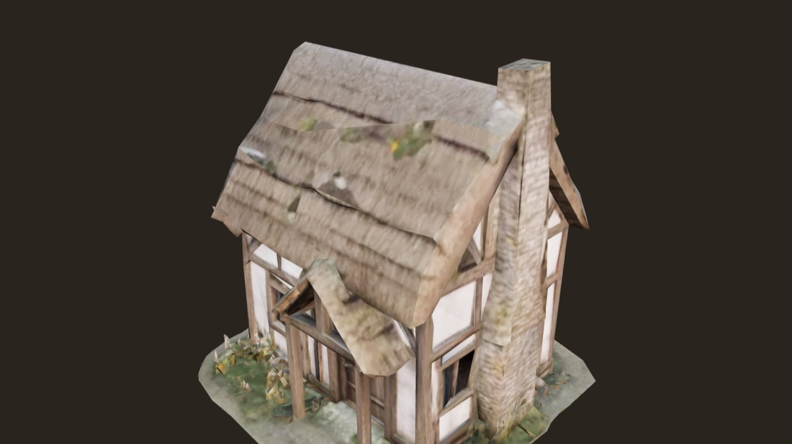
A small medieval village cottage with white plaster walls, dark timber framing, a steep thatched straw roof and a stone chimney, single isolated building, game asset
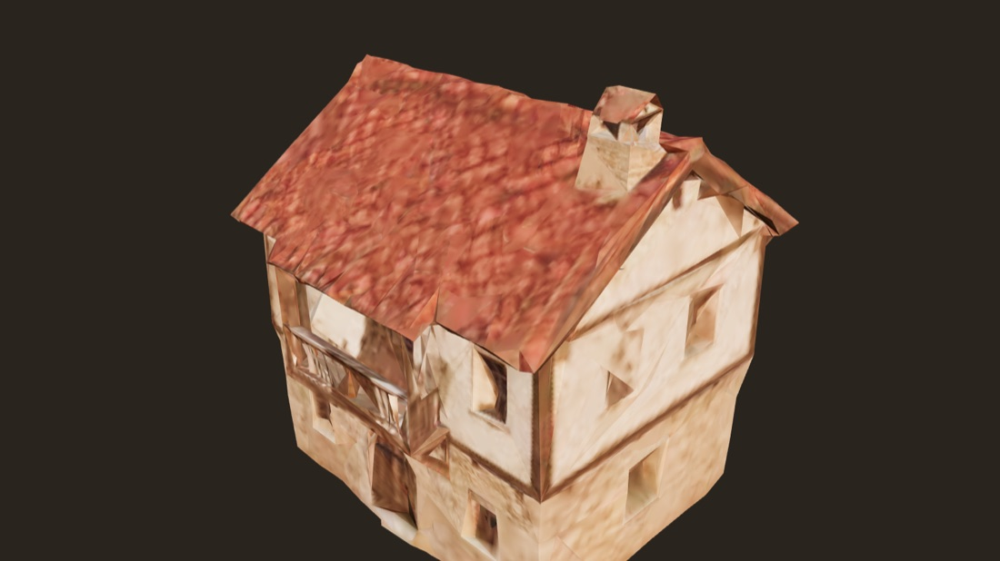
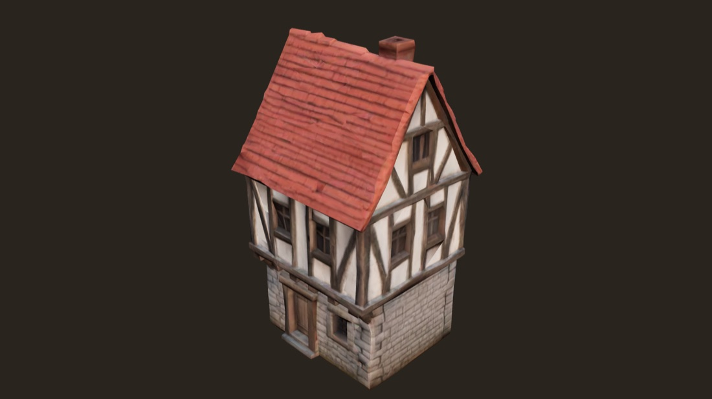
A tall narrow two-storey medieval townhouse, half-timbered upper floor overhanging a stone ground floor, steep terracotta-red clay tile roof, single isolated building, game asset
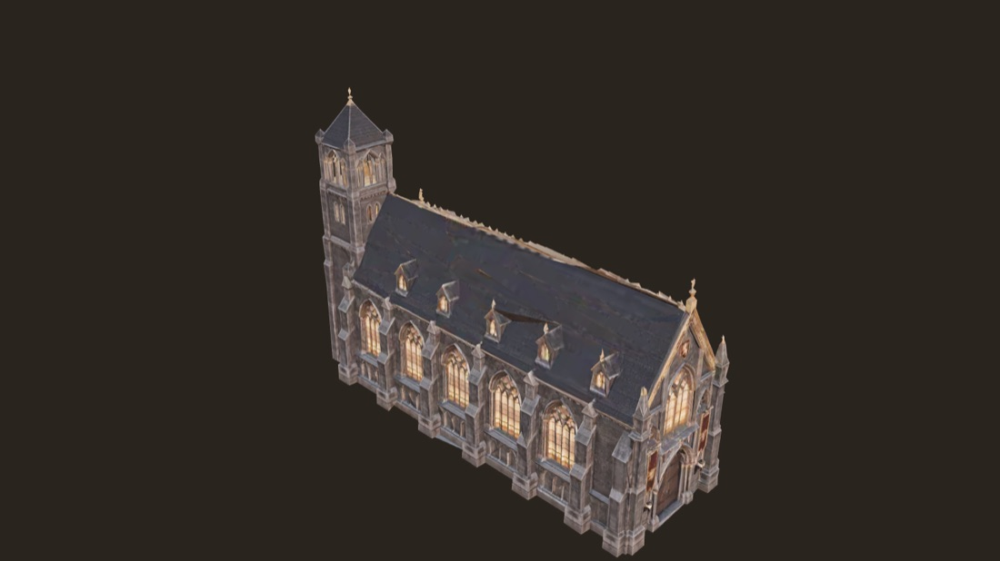
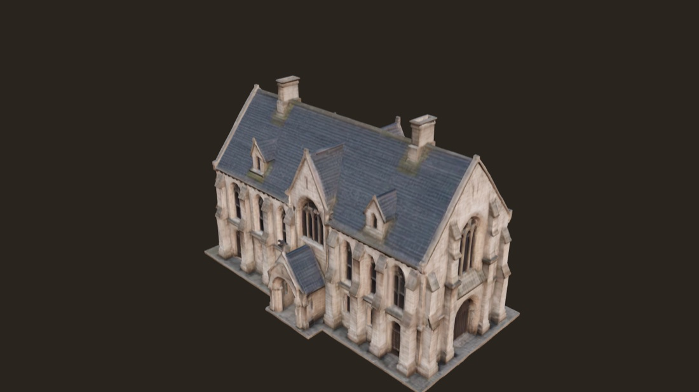
A grand medieval great hall, a long pale limestone building with tall arched windows, buttresses and a steep dark slate roof, single isolated building, game asset
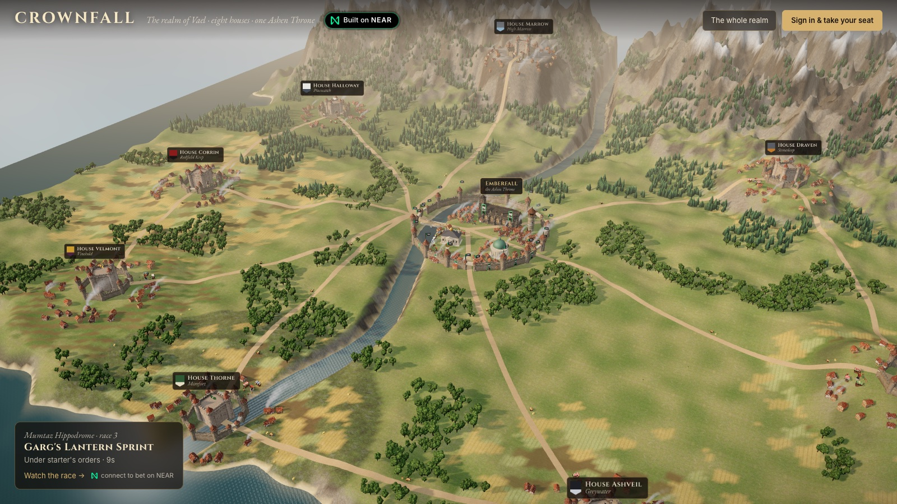
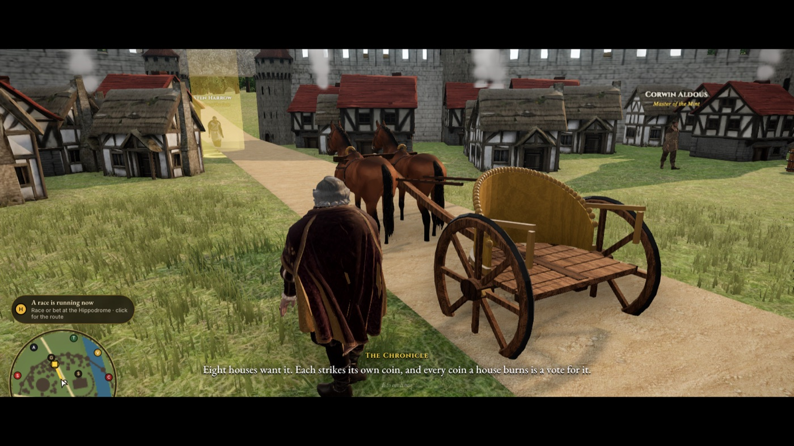
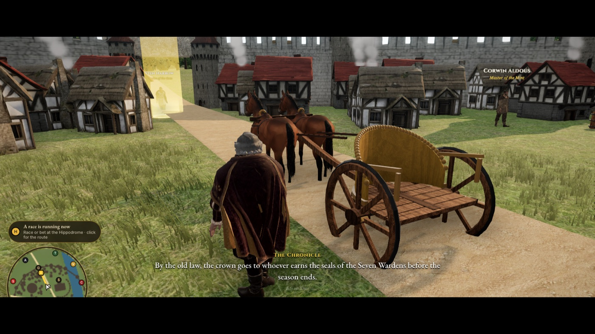
The keep came back with 43,956 triangles and edge-collapse simplification stopped at about half. We tried snapping vertices to a grid to force it lower. It hit the budget and wrecked the texture mapping (right). We threw that step away, kept the clean result, and gave the keep a larger budget, since only eight are drawn.
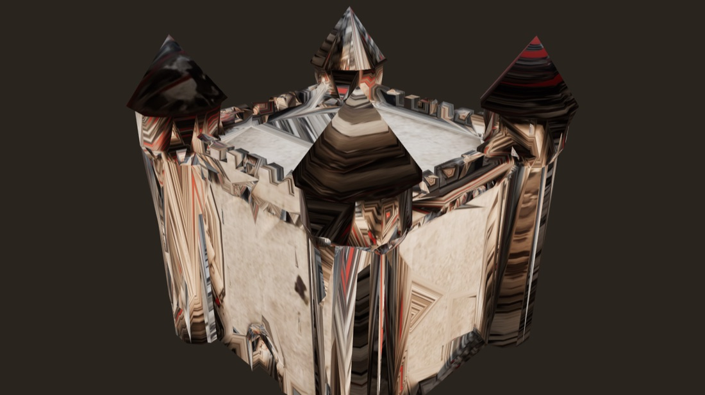
Lux3D predicts real sizes: the wall segment came back 12 units long. The realm bakes each model's transform into compressed positions that only hold values from -1 to 1, so the first walls rendered as grey shards across the sky (right, behind the houses). The fix is in the fitting step: every model is brought to one small size before compression.
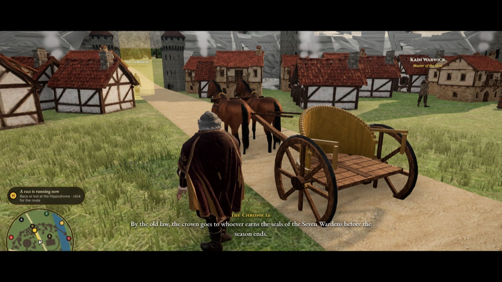
api.aholo.ai.cd tools/lux3d && npm install && node kit.mjs.kit.json (a desert kingdom, a frozen north) would rebuild the realm again in about 13 minutes of generation. The game already loads its buildings from a named set, so a second set is a small change.